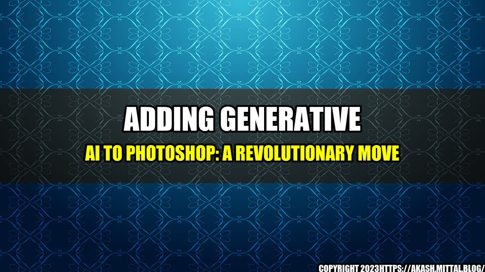

Adding Generative AI to Photoshop: A Revolutionary Move

It's no secret that Adobe Photoshop is one of the most powerful tools in the hands of creatives today. The software has been instrumental in creating some of the most iconic images and graphics that we've seen in recent history. However, Adobe always believes in staying ahead of the curve by innovating and adding new features to their already extensive and powerful software. One such feature was recently launched - generative AI.
Generative AI is a type of artificial intelligence that can create unique and original content on its own, with no assistance from humans. The implications of this technology are massive, especially in the creative and art fields. With the Photoshop generative AI, designers and creatives can now create even more jaw-dropping designs, illustrations and artworks that were previously impossible to create without extensive manual labor.
What does adding generative AI to Photoshop mean?
Simply put, adding generative AI to Photoshop means that designers and creatives can now leverage artificial intelligence to create better designs and images. Instead of taking hours to create a design or an artwork, professionals can now speed up the process and let the AI help them create the initial structure. This allows creatives to spend more time on polishing and perfecting the final product rather than wasting time on creating the initial structure and details.
- The generative AI in Photoshop is perfect for creating patterns and textures. Whether it's for product packaging, clothing designs or digital artworks, designers can now use the AI to create intricate and unique patterns and textures that were otherwise time-consuming to create manually.
- Generative AI is also great for creating 3D objects and designs. With the Photoshop AI, 3D modeling can be done easier, and with more precision, than ever before. Designers can create original 3D models and animations, as well as apply the AI to environmental designs for games and animations.
- One of the most exciting aspects of AI in Photoshop is the ability to create "smart" content. For example, designers can now create intelligent templates that understand the context in which they will be used and adapt accordingly. This makes it easier to create social media posts, advertisements, and other digital content that is tailored to the platform where it will be shared.
Real-world examples of AI adopted in Photoshop
Although the generative AI in Photoshop is a relatively new feature, it's already making waves in the creative field. Here are some quantifiable examples of how the AI has been used to create exceptional designs:
Nike's Air Max 720 Ibn Jasper: Nike used Adobe's generative AI to create the innovative design of their Air Max 720. According to Nike, it took just 5 hours to design the sneaker using the AI, compared to the usual 5 weeks that it would take to design such a complex sneaker in the traditional way.

Image source: Adweek
Adobe's "Project About Face": Adobe created "Project About Face," which uses generative AI to transform faces in images. The AI can add, remove and adjust different facial features, allowing users to quickly and easily adjust portraits without having to spend hours on manual editing.

Image source: Windows Report
Louise Fili's "Grafica della Strada:" Louise Fili, a renowned graphic designer, used the generative AI in Photoshop to create her "Grafica della Strada" project. The project features designs that combine typography, graphics, and imagery inspired by Italian street signage.

Image source: UCreative
Why is adding generative AI to Photoshop a game-changer?
The addition of generative AI to Photoshop is undoubtedly a game-changer in the creative field. Here are some reasons why:
- Speeds up the design process: As mentioned earlier, designers can now create the initial structure of a design much faster than before. This means that they can potentially take on more projects and complete them more quickly.
- Provides more creative options: With the AI's ability to generate unique patterns, textures, and 3D models, designers now have more creative options than ever before. This allows them to experiment and create designs that were previously unimaginable.
- Improves design accuracy: Generative AI in Photoshop allows designers to create more accurate and precise designs, with fewer errors. This ultimately leads to a better final product that is easily scalable and adaptable to various platforms and devices.
Conclusion
- The addition of generative AI to Photoshop is a revolutionary move: The ability to leverage artificial intelligence to create better designs and images is a huge leap forward in the creative field.
- The AI in Photoshop is already making waves in the real world: From designing sneakers to transforming portraits, the AI is already being used in real-world applications to create exceptional designs.
- Adding generative AI to Photoshop is a game-changer: The AI offers designers and creatives more creative options, speeds up the design process, and improves design accuracy.
Overall, the addition of generative AI to Photoshop is an exciting development that promises to take the creative field to new heights. It will be interesting to see how designers and creatives incorporate AI into their work and how the technology pushes the boundaries of what is possible.
Curated by Team Akash.Mittal.Blog
Share on Twitter Share on LinkedIn